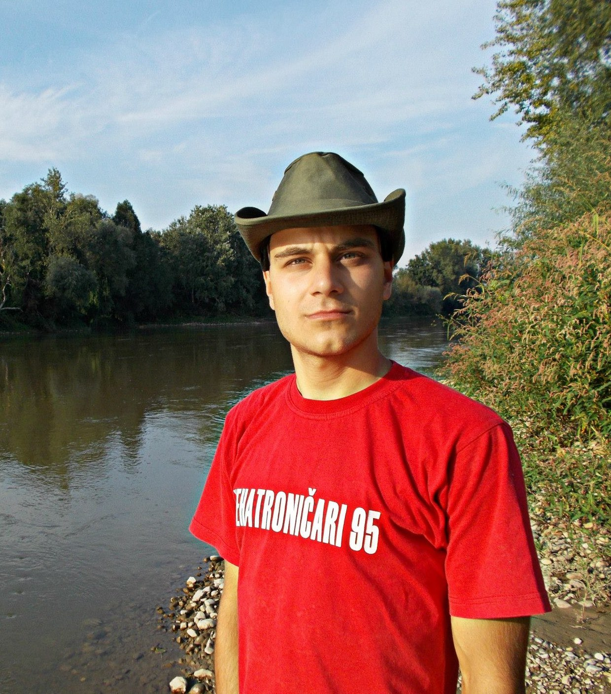

Đorđe Rajčić
Ja sam Đorđe Rajčić, student Visoke škole za informacione i komunikacione tehnologije. Rođen sam u Smederevskoj Palanci 1995. godine, sada trenutno živim u Beogradu.Završio sam Mašinsku elektrotehničku školu Gošu, smer Tehničar mehatronike. Uz narodnu muziku sam od kad znam za sebe. Otac mi se bavio pevanjem, brat mi se i dalje bavi. A zašto baš sajt o Vidi? Jednostavno volim njen stil, posebna je i peva iz duše. Naravno da postoje još dobrih pevača, ali eto nije bilo vremena za sve. Volimo slušati i Šabana, Ljubu, Kvaku. Bez muzike mi ne može proći ni jedan dan! Narodna muzika je moj život.



- Naslovna
- O Vidi
- Galerija
- Autor
- Kontakt
- Registracija
- Site map
-

© 2014 Beograd | Design by Ðorđe Rajčić